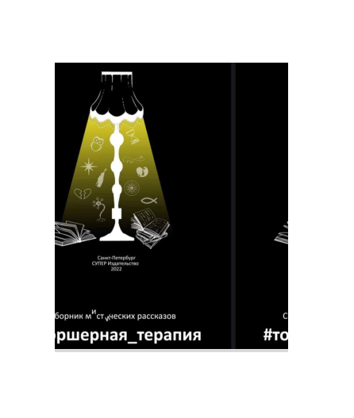
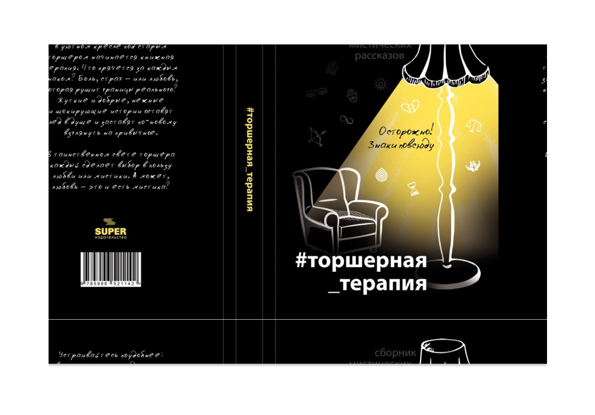

Купить
1. Электронный формат книги можно приобрести здесь

Читать электронную книгу
2. Аудиокнига скоро будет готова и вы сможете услышать рассказы в авторском исполнении
Оставить заявку на аудиокнигу
3. Эксклюзивный печатный экземпляр с добрыми пожеланиями от авторов можно приобрести здесь

Получить печатный экземпляр